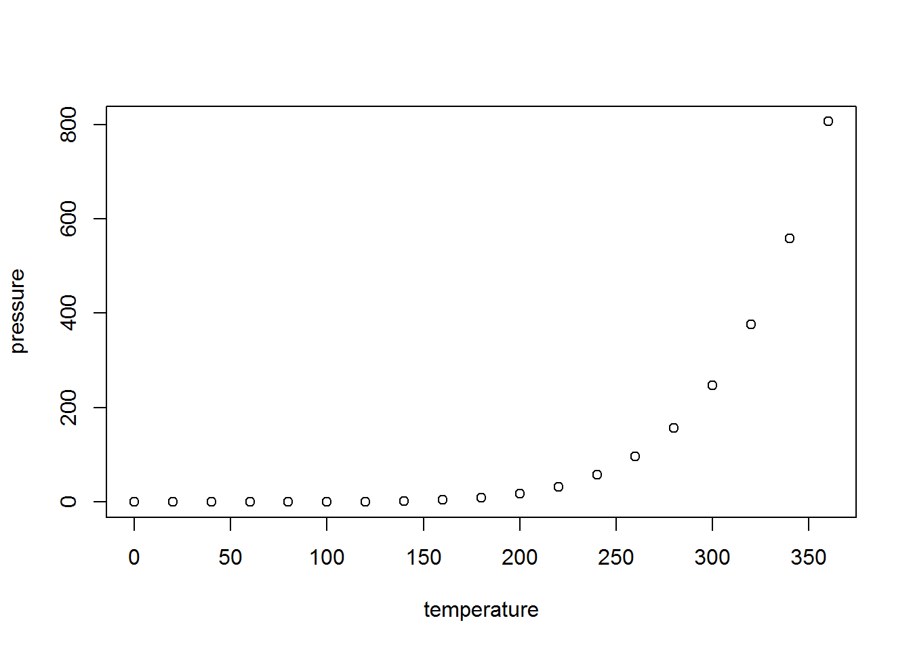

Last updated: 2018-07-24
workflowr checks: (Click a bullet for more information) ✖ R Markdown file: uncommitted changes
The R Markdown is untracked by Git. To know which version of the R Markdown file created these results, you’ll want to first commit it to the Git repo. If you’re still working on the analysis, you can ignore this warning. When you’re finished, you can run wflow_publish to commit the R Markdown file and build the HTML.
✔ Environment: empty
Great job! The global environment was empty. Objects defined in the global environment can affect the analysis in your R Markdown file in unknown ways. For reproduciblity it’s best to always run the code in an empty environment.
✔ Seed:
set.seed(20180724)
The command set.seed(20180724) was run prior to running the code in the R Markdown file. Setting a seed ensures that any results that rely on randomness, e.g. subsampling or permutations, are reproducible.
✔ Session information: recorded
Great job! Recording the operating system, R version, and package versions is critical for reproducibility.
✔ Repository version: 9371f58
wflow_publish or wflow_git_commit). workflowr only checks the R Markdown file, but you know if there are other scripts or data files that it depends on. Below is the status of the Git repository when the results were generated:
Ignored files:
Ignored: analysis/figure/
Untracked files:
Untracked: analysis/new.Rmd
Describe your project.
This is an R Markdown document. Markdown is a simple formatting syntax for authoring HTML, PDF, and MS Word documents. For more details on using R Markdown see http://rmarkdown.rstudio.com.
When you click the Knit button a document will be generated that includes both content as well as the output of any embedded R code chunks within the document. You can embed an R code chunk like this:
summary(cars) speed dist
Min. : 4.0 Min. : 2.00
1st Qu.:12.0 1st Qu.: 26.00
Median :15.0 Median : 36.00
Mean :15.4 Mean : 42.98
3rd Qu.:19.0 3rd Qu.: 56.00
Max. :25.0 Max. :120.00 You can also embed plots, for example:

Note that the echo = FALSE parameter was added to the code chunk to prevent printing of the R code that generated the plot.
mpg# A tibble: 234 x 11
manufacturer model displ year cyl trans drv cty hwy fl cla~
<chr> <chr> <dbl> <int> <int> <chr> <chr> <int> <int> <chr> <ch>
1 audi a4 1.8 1999 4 auto~ f 18 29 p com~
2 audi a4 1.8 1999 4 manu~ f 21 29 p com~
3 audi a4 2 2008 4 manu~ f 20 31 p com~
4 audi a4 2 2008 4 auto~ f 21 30 p com~
5 audi a4 2.8 1999 6 auto~ f 16 26 p com~
6 audi a4 2.8 1999 6 manu~ f 18 26 p com~
7 audi a4 3.1 2008 6 auto~ f 18 27 p com~
8 audi a4 q~ 1.8 1999 4 manu~ 4 18 26 p com~
9 audi a4 q~ 1.8 1999 4 auto~ 4 16 25 p com~
10 audi a4 q~ 2 2008 4 manu~ 4 20 28 p com~
# ... with 224 more rowsggplot(data = mpg) +
geom_point(mapping = aes(x = displ, y = hwy))ggplot(data = mpg)+
geom_point(mapping = aes(x = displ, y = hwy, color = class))ggplot(data = mpg) +
geom_point(mapping = aes(x = displ, y = hwy ,size = class))Warning: Using size for a discrete variable is not advised.sessionInfo()R version 3.5.1 (2018-07-02)
Platform: i386-w64-mingw32/i386 (32-bit)
Running under: Windows 7 (build 7601) Service Pack 1
Matrix products: default
locale:
[1] LC_COLLATE=English_United States.1252
[2] LC_CTYPE=English_United States.1252
[3] LC_MONETARY=English_United States.1252
[4] LC_NUMERIC=C
[5] LC_TIME=English_United States.1252
attached base packages:
[1] stats graphics grDevices utils datasets methods base
other attached packages:
[1] forcats_0.3.0 stringr_1.3.1 dplyr_0.7.6 purrr_0.2.5
[5] readr_1.1.1 tidyr_0.8.1 tibble_1.4.2 ggplot2_3.0.0
[9] tidyverse_1.2.1
loaded via a namespace (and not attached):
[1] withr_2.1.2 git2r_0.23.0 rvest_0.3.2
[4] tidyselect_0.2.4 rprojroot_1.3-2 lattice_0.20-35
[7] pkgconfig_2.0.1 utf8_1.1.4 xml2_1.2.0
[10] compiler_3.5.1 readxl_1.1.0 labeling_0.3
[13] Rcpp_0.12.18 cli_1.0.0 cellranger_1.1.0
[16] workflowr_1.1.1 plyr_1.8.4 httr_1.3.1
[19] tools_3.5.1 R.utils_2.6.0 nlme_3.1-137
[22] broom_0.5.0 rmarkdown_1.10 R6_2.2.2
[25] bindrcpp_0.2.2 bindr_0.1.1 knitr_1.20
[28] R.methodsS3_1.7.1 scales_0.5.0 assertthat_0.2.0
[31] digest_0.6.15 gtable_0.2.0 evaluate_0.11
[34] fansi_0.2.3 rstudioapi_0.7 stringi_1.1.7
[37] whisker_0.3-2 backports_1.1.2 htmltools_0.3.6
[40] hms_0.4.2 munsell_0.5.0 grid_3.5.1
[43] colorspace_1.3-2 glue_1.3.0 lubridate_1.7.4
[46] R.oo_1.22.0 rlang_0.2.1 magrittr_1.5
[49] lazyeval_0.2.1 yaml_2.1.19 crayon_1.3.4
[52] haven_1.1.2 modelr_0.1.2 pillar_1.3.0
[55] jsonlite_1.5 This reproducible R Markdown analysis was created with workflowr 1.1.1